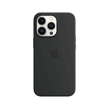
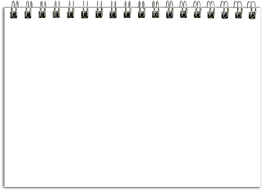
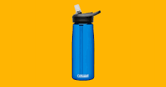
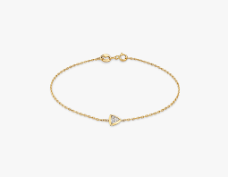

CASE STUDY BETWEEN GOOGLE LENS AND
MOBILENET
Google Lens 
VS
Mobilenet
- Test Image - 
- Test Image - 
- Test Image - 
- Test Image -
- Test Image - 
Output on Google Lens - Phone
Output on Mobilenet Model - I-Pod
Result - For this object, Google Lens gives a more accurate result.
Output on Google Lens - Notebook
Output on Mobilenet Model - Spiral Notebook
Result - For this object, Mobilenet gives a more accurate result.
Output on Google Lens - Water Bottle
Output on Mobilenet Model - Water Bottle
Result - For this object, Google Lens and Mobilenet have the same result.
Draw
Output on Google Lens - Orange Straw
Output on Mobilenet Model - Rubber Eraser
Result - For this object, Mobilenet gives a more accurate result.
Output on Google Lens - Diamond Heart Braclet
Output on Mobilenet Model - Chain
Result - For this object, Google Lens gives a more accurate result.
I have tested many objects today but Google Lens predicted 4 out of 5 correctly while Mobilenet only predicted 2 out of 5 corretly. According to my case study, Google Lens is better that Mobilenet.